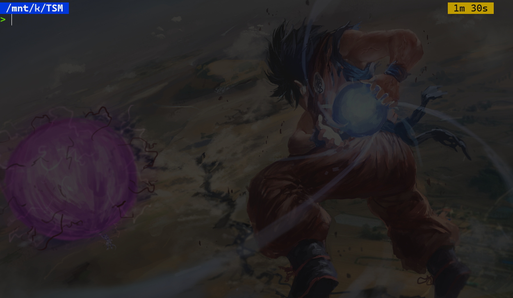
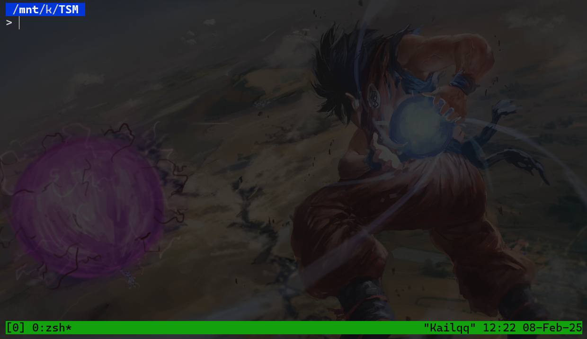
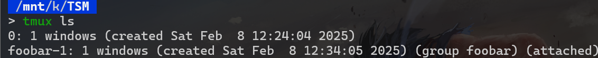
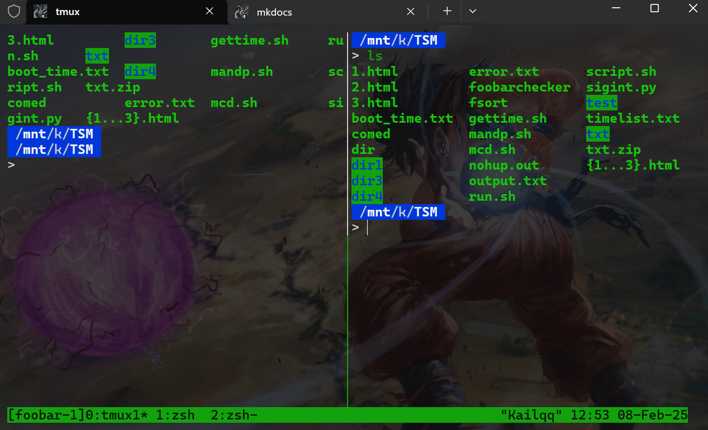
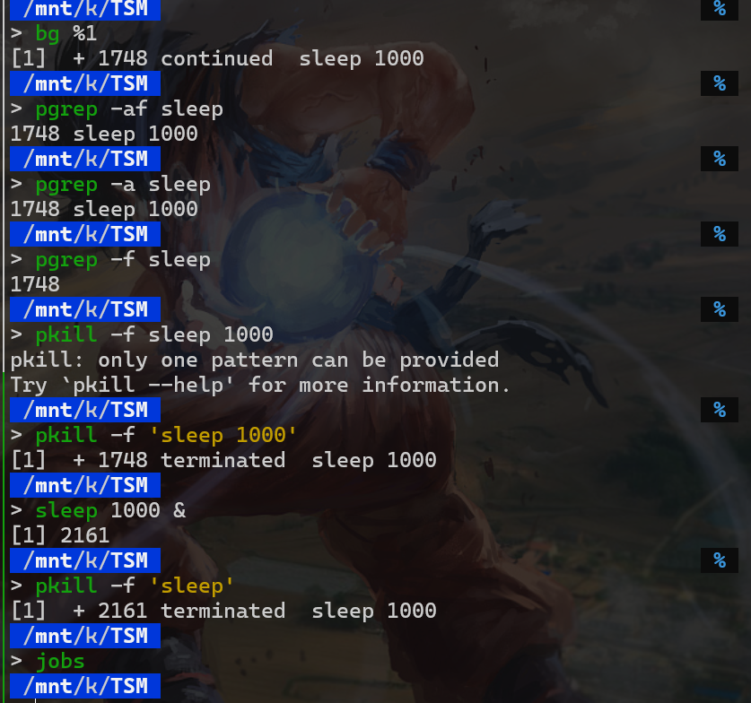
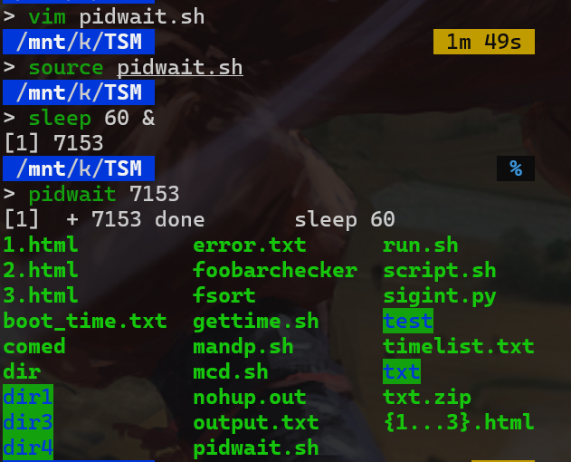

Command line environment¶
约 4152 个字 52 行代码 7 张图片 预计阅读时间 15 分钟
Job control¶
Sleep命令可以让进程休眠一段时间，单位是秒。Sleep命令的语法如下：
如果想要终止当前进程，可以按 Ctrl+C 键。当我们按下 Ctrl+C 键时，会发送一个 SIGINT 信号给当前进程，从而终止进程。
SIGINT 全称是 Signal Interrupt，表示中断信号。更多的信号可以参考使用 man signal 命令查看。
有时候，我们可以针对Ctrl+C进行处理，使其无法关闭我们的进程。
#! /usr/bin/env python3
import signal,time
def handler(signum,frame):
print("Ctrl+C pressed")
signal.signal(signal.SIGINT,handler)
i=0
while True:
time.sleep(1)
print("\r{}".format(i),end="")
i+=1
Ctrl+C（SIGINT）信号。
首先，脚本导入了signal和time模块。然后定义了一个名为handler的函数，这个函数在接收到SIGINT信号时会被调用，并打印出"Ctrl+C pressed"的消息。
接下来，使用signal.signal函数将SIGINT信号与handler函数绑定。当用户按下Ctrl+C时，程序不会立即终止，而是调用handler函数。
脚本接着初始化了一个变量i为0，并进入一个无限循环。在循环中，程序每秒钟休眠一次，并打印出当前的i值，然后将i递增1。
这个脚本的作用是每秒钟打印一个递增的数字，并在用户按下Ctrl+C时打印一条消息而不是终止程序。
\r 是回车符，表示将光标移动到当前行的行首。end="" 为了不换行而是在同一行中更新数字
运行之后，按下Ctrl+C，会打印出"Ctrl+C pressed"的消息，然后程序继续运行。
要想终止程序，可以按Ctrl+\，这样程序会收到一个SIGQUIT信号，然后程序会终止。因为我们并没有处理SIGQUIT信号。
Tip
对于SIGKILL信号，它是不能被捕获的，当收到这个信号时，程序会立即终止。但是有时候这个信号会留下孤儿进程（其子进程）。
Ctrl+Z 会暂停当前进程，并将其置于后台。例如当我们执行sleep 100命令时，按下Ctrl+Z，会返回suspended sleep 100，然后执行jobs命令，会看到当前进程被暂停了。
然后我们再输入
sleep 2000命令，并将其置于后台(&的含义)。nohup命令的意思是忽略挂起（SIGHUP）信号。
然后查看进程，会看到一个sleep 2000的进程。正在running
如果我们想要重新启动sleep 100，可以输入
再使用jobs命令查看进程，会看到sleep 100的进程正在running。其中%1表示第一个进程。
如果使用的是fg命令，则表示将进程放到前台。bg命令表示将进程放到后台。
如果我们想要终止sleep 2000，可以输入
jobs命令查看进程，会看到sleep 2000的进程已经被终止。也可以使用kill -STOP %1来再次暂停命令
Info
kill -KILL %2(kill) 会立即强制终止进程，而kill %2(terminate) 会正常终止进程。
Terminal multiplexer¶
有的时候我们想要同时打开VIM和终端，一边写代码，一边方便地运行，又或者我们想要在运行某个进程时监视它的资源使用情况……
这些都可以通过打开多个终端来实现，但是事实上还有更方便的方法，那就是使用Terminal Multiplexer(终端复用器)。
Terminal multiplexer（终端复用器）是一种软件应用程序，它允许用户在一个单一的终端窗口中运行和管理多个终端会话。通过使用终端复用器，用户可以在一个屏幕上同时查看和操作多个终端会话，而不需要打开多个独立的终端窗口。
终端复用器的主要功能包括：
- 会话管理：用户可以创建、分离和重新连接到终端会话。这对于远程工作特别有用，因为用户可以在断开连接后重新连接到相同的会话。
- 窗口和面板：用户可以在一个终端会话中创建多个窗口和面板，每个窗口和面板可以运行不同的命令或程序。
- 快捷键：终端复用器通常提供丰富的快捷键，方便用户快速切换窗口、分割面板、滚动历史记录等。
- 脚本和自动化：用户可以编写脚本来自动化常见的任务和配置，从而提高工作效率。
常见的终端复用器有tmux和screen。其中，tmux是现代的终端复用器，提供了更强大的功能和更好的用户体验。
在tmux中,有三种层级
sessions: 会话，一个会话可以有多个窗口 windows: 窗口，一个窗口可以有多个面板。 panes: 面板，一个面板就是一个终端。
例如我们输入tmux，这会在当前shell中启动一个tmux，然后tmux会启动一个shell


可以输入Ctrl+B然后输入D，这会分离当前的会话，然后回到之前的shell。如果直接输入Ctrl+D，这会关闭当前的会话，然后回到之前的shell。
例如我们可以在tmux开出的shell中执行之前创建的python脚本，然后按Ctrl+B然后输入D，回到之前的shell。进行一系列工作之后，我们再输入tmux a，这会重新连接到之前的会话，然后就可以看到我们的python脚本还在运行。
tmux与vim有些类似,输入Ctrl+B然后输入：，这会进入命令模式。(下面绿色一行)，然后可以输入list-sessions，这会列出所有会话。这也可以通过tmux ls来实现。
我们也可以通过tmux new -t session_name来创建一个会话，并命名为session_name。
例如我创建了一foobar的会话，然后输入tmux ls:

可以看到有两个会话，一个是foobar，一个是0。
现在可以使用
来连接到foobar会话。
Warning
使用tmux a -t foobar时不应该在一个tmux会话中，否则会报错,这是为了避免嵌套和混乱。
现在，我们可以关注windows，在一个tmux会话中，可以使用Ctrl+B然后输入c来创建一个新窗口。使用Ctrl+B然后输入n来切换到下一个窗口。使用Ctrl+B然后输入p来切换到上一个窗口。当窗口很多时，可以使用Ctrl+B然后输入数字来切换到对应的窗口。
如果想要删除一个窗口，可以使用Ctrl+B然后输入&来删除当前的窗口。
在上图中，我们可以看到有三个窗口，分别是0，1，2。当前所处的窗口是0(用*表示)。上一次所在的窗口是2(用-表示)。
可以看到当前三个window的名字都是zsh，这是因为我们没有给window命名。
我们可以使用Ctrl+B然后输入,来重命名当前窗口zsh为其它名字。
使用
Ctrl+B然后输入$可以重命名当前会话foobar为其它名字。
最后我们再来看看窗格panes，在一个window中，可以使用Ctrl+B然后输入"来水平分割出一个新的窗格，输入%来垂直分割出一个新的窗格。使用Ctrl+B然后输入x来关闭当前的窗格。使用Ctrl+B然后输入方向键来切换到对应的窗格。
效果如下：

还可以浏览不同的窗格布局，这可以通过
Ctrl+B然后输入space(亦即空格键)来实现。
当我们只想观察一个窗格时,可以通过Ctrl+B然后输入z来放大该窗格使其占据整个窗口，做完我们想做的事之后，可以通过Ctrl+B然后输入z来恢复原来的大小。这可以避免我们频繁地切换windows。
Dotfiles¶
alias命令用于为其他命令创建别名。通过使用alias，我们可以为常用的命令指定一个简短的名称，从而提高工作效率。例如，输入alias ll='ls -la'可以将ll设置为ls -la的别名，这样每次输入ll时就会执行ls -la命令。使用alias ll命令可以查看ll的别名。使用alias命令可以查看所有别名。然后使用unalias命令来取消别名。
通过alias命令，我们可以为常用的命令指定一个简短的名称，从而提高工作效率。
但是当我们拥有的别名越来越多时，总不能每一次打开终端都输入一遍这些别名吧。
这时候，我们就可以使用dotfiles来管理这些别名，这就是dotfiles的用途之一
Dotfiles是指以.开头的配置文件，这些文件通常用于存储用户的个性化设置和配置。常见的dotfiles包括.bashrc、.vimrc、.gitconfig等。
通过管理和定制这些dotfiles，我们可以在不同的系统和环境中保持一致的工作环境。例如，我们可以在.bashrc中定义别名、环境变量和函数，在.vimrc中配置Vim编辑器的行为和外观，在.gitconfig中设置Git的用户信息和别名。
Note
在bash中，~/.bashrc是用户的主配置文件，当用户登录时，bash会读取这个文件。
在zsh中，~/.zshrc是用户的主配置文件，当用户登录时，zsh会读取这个文件。
例如我们想要在bash中定义一个别名ll，我们可以在~/.bashrc中添加以下内容：
然后启动bash，输入ll，就会看到ls -la的输出。
目前比较美观的dotfiles管理工具是oh-my-zsh，它可以帮助我们管理zsh的配置文件。支持很多插件和主题。可以参考oh-my-zsh。
Github上有很多人热衷于配置并分享自己的dotfiles，也可以去上面找一个自己喜欢的配置。
也存在专门 dotfiles的网站，可以参考Dotfile.github.io。
Remote machines¶
ssh（Secure Shell）是一种用于在不安全的网络上安全地访问远程计算机的协议。它提供了加密的通信通道，确保数据的安全性和完整性。ssh通常用于远程登录、文件传输和执行命令。
要连接到远程机器，可以使用以下命令：
username是你在远程机器上的用户名。hostname是远程机器的地址，可以是IP地址或域名。
例如，要连接到IP地址为192.168.1.10的机器，使用用户名user，可以输入：
可以使用ssh直接在远程机器上执行命令，而不需要登录到远程终端。命令的语法如下：
例如，要在远程机器上查看当前目录的内容，可以使用：
这会在远程机器上执行ls -la命令，并将结果返回到本地终端。
为了提高安全性，可以使用SSH密钥进行身份验证。SSH密钥由一对密钥组成：公钥和私钥。公钥存储在远程机器上，私钥保存在本地机器上。
可以使用以下命令生成SSH密钥对：
-t rsa指定密钥类型为RSA。-b 4096指定密钥长度为4096位。-C "your_email@example.com"添加注释（通常是你的邮箱）。
生成的密钥对通常存储在~/.ssh/目录下，公钥文件为id_rsa.pub，私钥文件为id_rsa。
将公钥添加到远程机器的~/.ssh/authorized_keys文件中，以便使用SSH密钥进行登录。
常用选项包括：
-p port：指定连接的端口号，默认是22。-i identity_file：指定私钥文件。-L local_port:remote_host:remote_port：设置本地端口转发。
可以使用scp命令通过SSH协议传输文件：
local_file是要传输的本地文件。remote_path是远程机器上的目标路径。
例如，将本地文件example.txt传输到远程机器的/home/user/目录：
ssh加密
目前ssh加密使用的是RSA加密算法。
RSA（Rivest-Shamir-Adleman）算法是一种非对称加密算法，由Ron Rivest、Adi Shamir和Leonard Adleman在1977年提出。非对称加密算法使用一对密钥：公钥和私钥。公钥用于加密，私钥用于解密。
RSA算法的安全性基于大整数分解的困难性。具体来说，RSA算法依赖于两个大质数的乘积难以分解这一数学难题。RSA算法的基本步骤为：
-
生成密钥对：
- 选择两个大质数 \( p \) 和 \( q \)。
- 计算它们的乘积 \( n = p \times q \)，其中 \( n \) 是模数。
- 计算 \( \phi(n) = (p-1) \times (q-1) \)。
- 选择一个与 \( \phi(n) \) 互质的整数 \( e \)，其中 \( e \) 是公钥指数。
- 计算 \( d \) 使得 \( d \times e \equiv 1 \mod \phi(n) \)，其中 \( d \) 是私钥指数。
-
公钥和私钥：
- 公钥由 \( (e, n) \) 组成。
- 私钥由 \( (d, n) \) 组成。
-
加密：
- 将明文消息 \( M \) 转换为整数 \( m \)，其中 \( 0 \leqslant m < n \)。
- 使用公钥 \( (e, n) \) 进行加密，计算密文 \( c \)：
\[ c \equiv m^e \mod n \] -
解密：
- 使用私钥 \( (d, n) \) 进行解密，计算明文 \( m \)：
\[ m \equiv c^d \mod n \]
Exercise&Solutions¶
Job Control¶
1.From what we have seen, we can use some
ps aux | grep commands to get our jobs’ pids and then kill them,
but there are better ways to do it. Start a sleep 10000 job in
a terminal, background it with Ctrl-Z and continue its execution with bg.
Now use pgrep to find its pid and pkill to kill it without ever typing the pid itself. (Hint: use the -af flags).
即使用pgrep和pkill来找到进程的pid并杀死它，而不需要手动输入pid。
ps aux | grep
ps aux | grep 命令用于显示所有进程的详细信息，并根据指定的条件过滤进程。
ps aux：显示所有进程的详细信息。grep：根据指定的条件过滤进程。 通过pipe(|)将ps aux的输出作为grep的输入，然后根据条件过滤进程。
首先了解一下pgrep和pkill的用法。
pgrep 和 pkill 是两个非常有用的命令行工具，用于在 Unix 和 Linux 系统上管理进程。
pgrep 用于查找与指定模式匹配的进程 ID。
常用选项:
- -f: 匹配完整的命令行，而不仅仅是进程名。
- -l: 显示进程名和进程 ID。
- -a: 显示完整的命令行。
- -u user: 只显示属于指定用户的进程。
示例:
这将查找所有命令行中包含“sleep”的进程。pkill 用于根据名称或其他属性终止进程。
-f: 匹配完整的命令行。
- -u user: 只终止属于指定用户的进程。
-signal: 发送指定的信号（如-9代表SIGKILL）。
知道之后，接下来就是简单地验证命令了。

2.Say you don’t want to start a process until another completes. How would you go about it? In this exercise, our limiting process will always be sleep 60 &. One way to achieve this is to use the wait command. Try launching the sleep command and having an ls wait until the background process finishes.
However, this strategy will fail if we start in a different bash session, since wait only works for child processes. One feature we did not discuss in the notes is that the kill command’s exit status will be zero on success and nonzero otherwise. kill -0 does not send a signal but will give a nonzero exit status if the process does not exist. Write a bash function called pidwait that takes a pid and waits until the given process completes. You should use sleep to avoid wasting CPU unnecessarily.
即我们想要在另一个进程完成之后再启动一个进程，我们可以使用wait命令。
例如我们想要在sleep 60 &完成之后再启动ls，我们可以使用wait命令。
但是wait命令只适用于子进程，所以如果我们在不同的bash session中启动进程，这个方法就会失败。
一个课上没有讨论的特性是kill命令的退出状态，当成功时为0，否则为非0。kill -0不会发送信号，但当进程不存在时会返回非0的退出状态。
所以我们可以使用kill -0来检查进程是否存在，如果存在则等待，否则直接执行。
2>&1。

Terminal multiplexer¶
Follow this tmux tutorial and then learn how to do some basic customizations following these steps.
配置的话我只把Ctrl+B改成了Ctrl+A
水平分割从"改成了-
垂直分割从%改成了|
配置完后重启tmux命令即可生效
Aliases¶
1.Create an alias dc that resolves to cd for when you type it wrongly.
即创建一个别名dc，当输入dc时，会自动解析为cd。
2.Run history | awk '{$1="";print substr($0,2)}' | sort | uniq -c | sort -n | tail -n 10 to get your top 10 most used commands and consider writing shorter aliases for them. Note: this works for Bash; if you’re using ZSH, use history 1 instead of just history.
即获取你最常用的10个命令，并考虑为它们写更短的别名。
我最主要用的是
我想把它简写为
放在了我的~/.zshrc文件中。
Dotfiles的习题主要是给配置添加软连接到本地的文件,不做赘述
Remote machines¶
Install a Linux virtual machine (or use an already existing one) for this exercise. If you are not familiar with virtual machines check out this tutorial for installing one.
即安装一个Linux虚拟机(或使用已有的虚拟机)，如果对虚拟机不熟悉，可以参考这个教程Installing a virtual machine。
其实我之前一直都搞不懂ssh的配置文件，做完这道题简直是大彻大悟了。
现在，我有一台windows电脑，安装了linux虚拟机;现在我想要直接通过ssh vm连接到虚拟机.
首先，在windows的~/.ssh文件夹下创建一个config文件，添加以下内容：
Host vm
User username_goes_here
HostName ip_goes_here
IdentityFile ~/.ssh/id_xxxx
LocalForward 9999 localhost:8888
这里的Host就是远端机器，在这里就是我的虚拟机。
User就是我的用户名，注意这个用户名在虚拟机中必须要存在。
HostName就是我的虚拟机的ip地址
IdentityFile就是我的私钥文件，在这里就是我的私钥文件。
然后在Windows中通过ssh-copy-id vm将我的公钥复制到虚拟机中。
如果powershell中没有
ssh-copy-id，可以直接去虚拟机中将对应的公钥内容添加到~/.ssh/authorized_keys文件中。
然后就大功告成了，现在就可以直接通过ssh vm连接到虚拟机了。